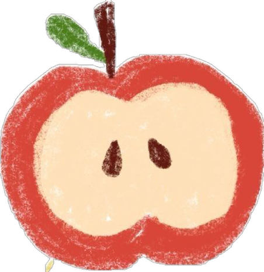

This was my introduction to Interactive Media. I was anticipating and very excited to start this class because of the exploration, experimentation and projects that it entails hehehe.
In the beginning of class, we were taught wot WWW (World Wide Web) and about the Anatomy of a Webpage includes. This included the coding languages html, css and javascript. With this, we were also taught how to setup Visual Studio Code, grow our initial file tree, and start with basic coding!

Very fitting for a class called Interactive Media, we experimented the interaction with various objects to catalyse our creative experiementative brains, this was abstract and out-of-the-box thinking that I was not used to but found myself curious.


Beetle key: the beetle key has all the functions to a car within its figure. Like normal keys, it can be easily carried around in a pocket. However, another function it has is the "call feature" where you can call the beetle and it comes to where you are as it can move. The pinchers can be squeezed to lock your car, each leg can be switched to unlock your car doors, and squeezing the back two legs unlocks your boot, pressing the wings unlocks your car.


Balled mouse: essentially, it is a mouse that is in the shape of a heavy, metal ball; its functionalities are a bit different to a normal mouse. As illustrated in the diagram, you roll the ball around to move your cursor around the screen. You click with the "balled mouse" by banging it on a surface, and you type with it by grasping it three times to activate "keyboard" mode and you type with "drag typing". Key ball: you put the ball into a specifically designed ball-keyhole to unlock a door.
Ambiguitastoleranz: tolerating ambiguity
I really love and admire all the Avatar movies due to their movemental approach to film making and tv. Producers XX paved the way with the movie making, storyline and themes in the Avatar movies where they dive into new spaces, interfaces and worlds for viewers to appreciate.
1. snoozed my alarm on my phone 2. put my phone on charge 3. turned off my cute little side lamp 4. turned on my headphones 5. started strava on my phone 6. kept checking my time when running 7. switched songs, changed volume and noise cancelling settings with functions on my headphones 8. turned on the stove 9. put on some music on my phone 10. scrolled through insta reels and tiktok 11. took photos of an outfit 12. searched ptv journey on phone 1. tapped on my myki 2. texted some people 3. put my phone on charge with my power bank 4. tapped on my myki 5. scrolled on my phone 6. watched youtube videos 7. studied on my laptop ways to organise my data - used phone (||||||||||) - plug things in aka charge (||) - turning things on and off (||||) - interaction with objects (|||||||)
The website appears to be a portfolio for a cinematic artist called Anorak. The landing page is very abstract and text-heavy, with writing that does not completely make sense at first but creates a mysterious and artistic feeling. Certain words are bolded, and when hovered over they stretch and become more emphasised while activating a pop-up screen that plays cinematic videos. The works themselves are very high quality, experimental, and feel deeply thought out, using montage-style editing and abstract visuals.